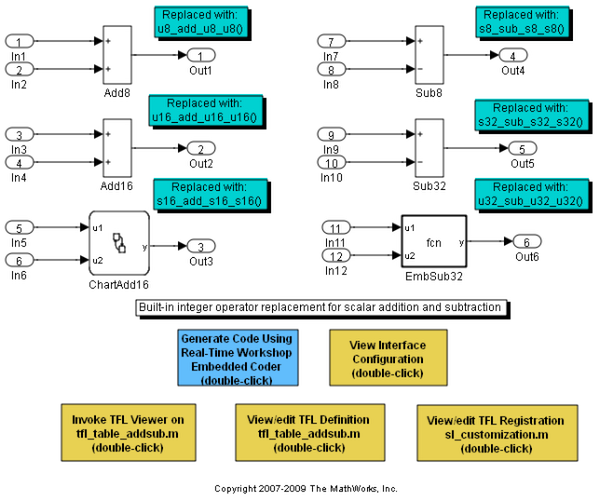
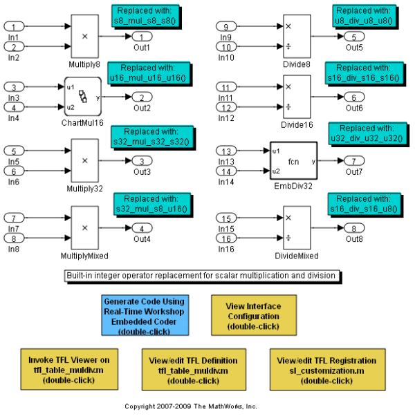
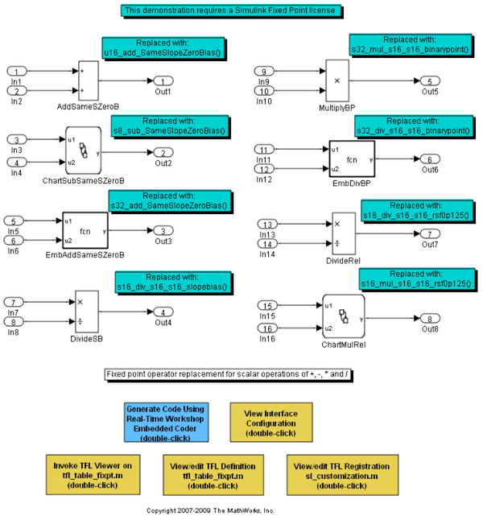
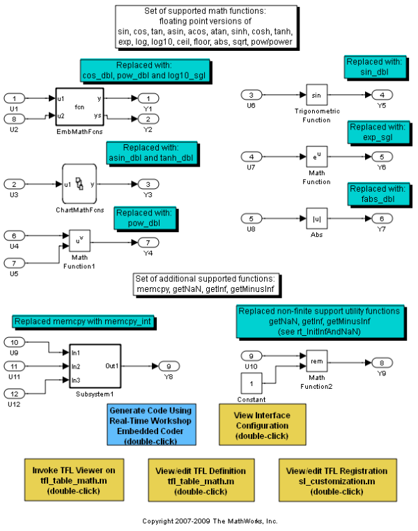
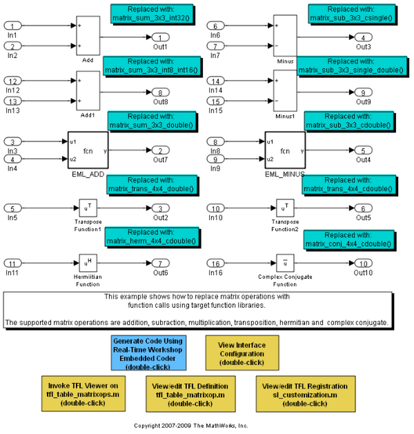
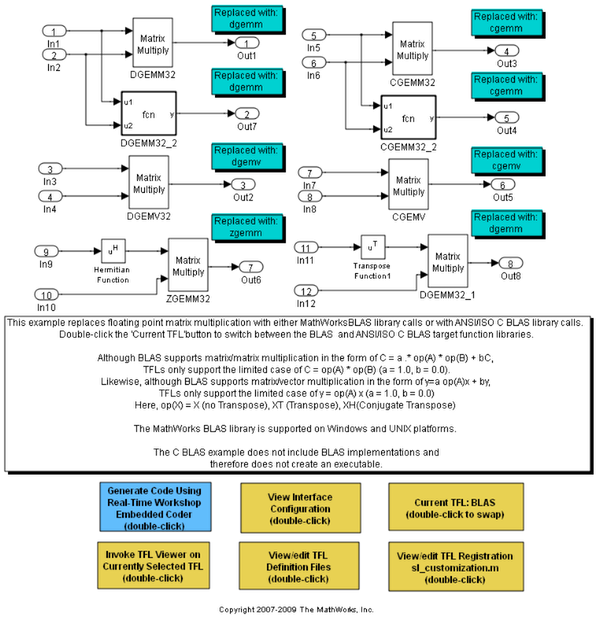
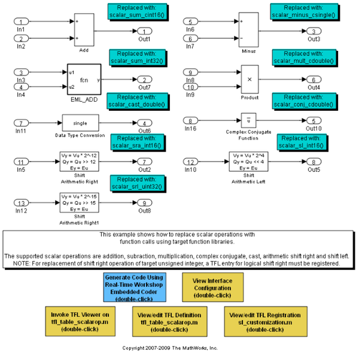
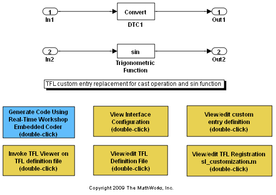

数学関数と演算子の置換
このデモでは、ターゲット関数ライブラリ (TFL) を使用して、生成されたコードで演算子と関数を置換する方法について説明します。以下で説明されるモデルでは、置換機能を紹介します。各モデルの例では、それぞれターゲット関数ライブラリが示され、MATLAB® ベースの API を使用した演算子と関数の置換の作成方法、および Simulink® を使用してこれらを登録する方法について説明します。
ターゲット関数ライブラリを使用すると、次のことが可能になります。
- モデル コードと、外部コードおよびレガシ コードとの優れた統合。コード サイズと検証の労力が削減されます。
- ターゲット固有の関数実装の使用。組み込みアプリケーションのパフォーマンスを最適化します。
ターゲット関数ライブラリの機能を次に示します。
- 数学関数をターゲット固有の関数実装で置換
- 数学演算子をターゲット固有の関数実装で置換
- 生成されたコードで置換をコンパイルおよびビルドするためのビルド情報の指定
目次
- ターゲット関数ライブラリを使用する手順
- 組み込み整数の演算子置換の加算と減算
- 組み込み整数の演算子置換の乗算と除算
- 基本的な演算子における固定小数点演算子の置換
- Embedded MATLAB Coder における演算子置換の加算と減算
- ターゲット関数ライブラリを使用するための Embedded MATLAB Coder の設定
- C ソース ファイルへの MATLAB プログラムのコンパイル
- Embedded MATLAB Coder で生成されたコードの検査
- 数学関数の置換
- 行列演算子の置換
- BLAS サポート
- その他のスカラー演算子の置換
- カスタム TFL エントリ
- ターゲット関数ライブラリ用のビューアー
- ビルド サポート
- 予約識別子のサポート
- ターゲット関数ライブラリの例の削除
ターゲット関数ライブラリを使用する手順
- 置換関数エントリのテーブルを作成します。
- Simulink の sl_customization.m API を使用して 1 つまたは複数のテーブルから構成されるターゲット関数ライブラリを登録します。
- Real-Time Workshop® の下にある [コンフィギュレーションパラメーター] ダイアログボックスの [インターフェイス] ペインを使用して、目的のターゲット関数ライブラリをモデルから選択します。
- Real-Time Workshop Embedded Coder™ を使用してモデルのコードを生成します。
これらの手順の詳細は、こちらを参照してください。
組み込み整数の演算子置換の加算と減算
この例では、ターゲット関数ライブラリは、2 つの入力の '+' と '-' (組み込み整数であるデータ型のスカラー演算) を置換します。
- int8、uint8
- int16、uint16
- int32、uint32
モデル rtwdemo_tfladdsub は、これらの置換を示しています。演算子置換の詳細は、こちらを参照してください。
open_system('rtwdemo_tfladdsub')
 組み込み整数の演算子置換の乗算と除算
この例では、ターゲット関数ライブラリは、2 つの入力の '*' と '/' (組み込み整数であるデータ型のスカラー演算) を置換します。
- int8、uint8
- int16、uint16
- int32、uint32
モデル rtwdemo_tflmuldiv は、これらの置換を示しています。
open_system('rtwdemo_tflmuldiv')
 基本的な演算子における固定小数点演算子の置換
この例で、ターゲット関数ライブラリは、2 つの入力の '+'、'-' 、'*'、および '/' (固定小数点であるデータ型のスカラー演算) を置換します。置換は、次の項目の一致として定義できます。
- 入力と出力における特定のスロープ スケーリング/バイアス スケーリングの組み合わせ
- 入力と出力における特定の 2 進小数点スケーリングの組み合わせ
- 入力と出力間の相対的なスケーリング
- 入力と出力全体で同じスロープ値とゼロの正味バイアス
モデル rtwdemo_tflfixpt は、これらの置換を示しています。
メモ: モデルで固定小数点データ型を使用するには、Simulink Fixed Point のライセンスが必要です。
open_system('rtwdemo_tflfixpt')
 Embedded MATLAB Coder における演算子置換の加算と減算
この例では、ターゲット関数ライブラリは、2 つの入力の '+' と '-' (emlc コマンドを使用する際の整数データ型のスカラー演算) を置換します。
演算子置換の詳細は、こちらを参照してください。Embedded MATLAB Coder を使用して組み込み可能な C コードを生成する方法の詳細は、こちらを参照してください。
このデモを実行するには MATLAB プログラムが必要です。このファイルを一時ディレクトリにコピーします。この手順では、システムの一時ディレクトリへの書き込み権限が必要です。
MATLAB ファイルを表示するには、こちらを参照してください。
emlcdir = [tempname filesep 'emlcdir']; if ~exist(emlcdir,'dir') mkdir(emlcdir); end emlcsrc = ... fullfile(matlabroot,'toolbox','rtw','rtwdemos','tfl_demo','addsub_two_int16.m'); copyfile(emlcsrc,emlcdir,'f'); emlcurdir = pwd; cd(emlcdir);
ターゲット関数ライブラリを使用するための Embedded MATLAB Coder の設定
RTW ビルドのコンフィギュレーションパラメーターを設定し、演算入力データ型を定義します。TFL テーブルの定義ファイルを表示するには、こちらを参照してください。
addpath(fullfile(matlabroot,'toolbox','rtw','rtwdemos','tfl_demo')); sl_refresh_customizations; rtwConfig = emlcoder.RTWConfig('ert'); rtwConfig.TargetFunctionLibrary = 'Addition & Subtraction Examples'; rtwConfig.GenerateReport = false; rtwConfig.LaunchReport = false; t = int16(2);
C ソース ファイルへの MATLAB プログラムのコンパイル
目的のターゲット関数ライブラリを参照するコンフィギュレーション パラメーターと、emlc コマンドへの入力パラメーターとして前述の手順で定義された入力クラスの例を使用して MATLAB プログラムをコンパイルします。
emlc -T rtw -s rtwConfig -c addsub_two_int16 -eg {t, t};
Embedded MATLAB Coder で生成されたコードの検査
コンパイル後は、生成されたソース コードを検査できます。matlab:edit(fullfile(emlcdir,'emcprj','rtwlib','addsub_two_int16','addsub_two_int16.c'))
数学関数の置換
ターゲット関数ライブラリでは、さまざまな関数の置換がサポートされています。サポートされている関数の一覧については、こちらを参照してください。
モデル rtwdemo_tflmath は、これらの置換を示しています。数学関数の置換の詳細は、こちらを参照してください。
cd(emlcurdir);
open_system('rtwdemo_tflmath')
 行列演算子の置換
ターゲット関数ライブラリでは、次の行列演算の置換がサポートされています。
addition、subtraction、multiplication、transposition、conjugate、hermitian
モデル rtwdemo_tflmatops は、これらの置換の一部を示しています。サポートされているデータ型は、以下のとおりです。
- single、double
- int8、uint8
- int16、uint16
- int32、uint32
- csingle、cdouble
- cint8、cuint8
- cint16、cuint16
- cint32、cuint32
- 固定小数点整数
- 混合データ型 (入力ごとに異なるデータ型)
こちらを参照してください。
open_system('rtwdemo_tflmatops')
 BLAS サポート
また、行列の乗算は Basic Linear Algebra Subroutines (BLAS) にマップできます。以下の演算は、BLAS サブルーチンにマップできます。
行列の乗算、1 つまたは両方の入力の転置を使用した行列の乗算、1 つまたは両方の入力のエルミート演算を使用した行列の乗算
モデル rtwdemo_tflblas は、BLAS xGEMM と xGEMV サブルーチンへのマッピングを示しています。
open_system('rtwdemo_tflblas')
 その他のスカラー演算子の置換
ターゲット関数ライブラリでは、次のスカラー演算の置換がサポートされています。
複雑な演算には、加算、減算、乗算、除算、複素共役があります。その他のスカラー演算には、データ型のキャスト、左シフト、算術の右シフト、論理の右シフトがあります。
モデル rtwdemo_tflscalarops は、これらの置換の一部を示しています。サポートされているデータ型は、以下のとおりです。
- single、double
- int8、uint8
- int16、uint16
- int32、uint32
- csingle、cdouble
- cint8、cuint8
- cint16、cuint16
- cint32、cuint32
- 固定小数点整数
- 混合データ型 (入力ごとに異なるデータ型)
open_system('rtwdemo_tflscalarops')
 カスタム TFL エントリ
TFL では、カスタム エントリの作成がサポートされています。RTW.TflCFunctionEntryML または RTW.TflCOperationEntryML のいずれかからサブクラス化することによって独自の TFL エントリを作成できます。エントリクラスは、一致するロジックをカスタマイズする、または一致したエントリを変更する do_match メソッドを実装する必要があります。do_match は、あらかじめ設定された固定のシグネチャを持つ必要があります。モデル rtwdemo_tflcustomentry は、カスタム エントリを使用して独自の一致する関数を作成する方法、および追加の実装関数の引数として定数を挿入することによって一致したエントリを変更する方法を示しています。カスタム TFL エントリの詳細は、こちらを参照してください。
open_system('rtwdemo_tflcustomentry')
 ターゲット関数ライブラリ用のビューアー
テーブルとそのエントリを検証するためにビューアーが提供されています。たとえば、テーブル 'tfl_tablemuldiv' を表示する場合、コマンドは次のようになります。
tfl = tfl_table_muldiv; me = RTW.viewTfl(tfl);
ターゲット関数ライブラリのビューアーの詳細は、こちらを参照してください。
ビルド サポート
ターゲット関数ライブラリの各エントリでは、次のようなビルド情報を指定できます。
- ヘッダー ファイルの依存関係
- ソース ファイルの依存関係
- 追加のインクルードパス
- 追加のソースパス
- 追加のリンクフラグ
さらに、メソッド RTW.copyFileToBuildDir を使用して、エントリによって指定されたソース ファイルとヘッダー ファイルをローカルでコピーできます。コンパイル情報の指定方法の詳細は、こちらを参照してください。
メモ: このデモのモデルはコード生成用にのみ設定されているため、置換関数の実装は提供されません。
予約識別子のサポート
エントリによって定義される各関数の実装は、一意の識別子として予約されます。その他の識別子は、ヘッダー ファイルごとにテーブルで指定できます。追加の予約識別子を指定すると、重複するシンボルやその他の識別子関連のコンパイルとリンクの問題の発生を防ぐことができます。
予約識別子の指定方法の詳細は、こちらを参照してください。
ターゲット関数ライブラリの例の削除
モデルの例の利用が終了したら、次のコマンドを使用してターゲット関数ライブラリの例を削除し、モデルの例を終了することができます。
rmpath(fullfile(matlabroot,'toolbox','rtw','rtwdemos','tfl_demo')); sl_refresh_customizations; close_system('rtwdemo_tfladdsub', 0) close_system('rtwdemo_tflmuldiv', 0) close_system('rtwdemo_tflfixpt', 0) close_system('rtwdemo_tflmath', 0) close_system('rtwdemo_tflmatops', 0) close_system('rtwdemo_tflblas', 0) close_system('rtwdemo_tflscalarops', 0) close_system('rtwdemo_tflcblas', 0) if ~isempty(me) me.delete; end clear tfl; clear me; clear emlcdir; clear emlcsrc; clear emlcurdir; clear n1; clear rtwConfig; clear t;